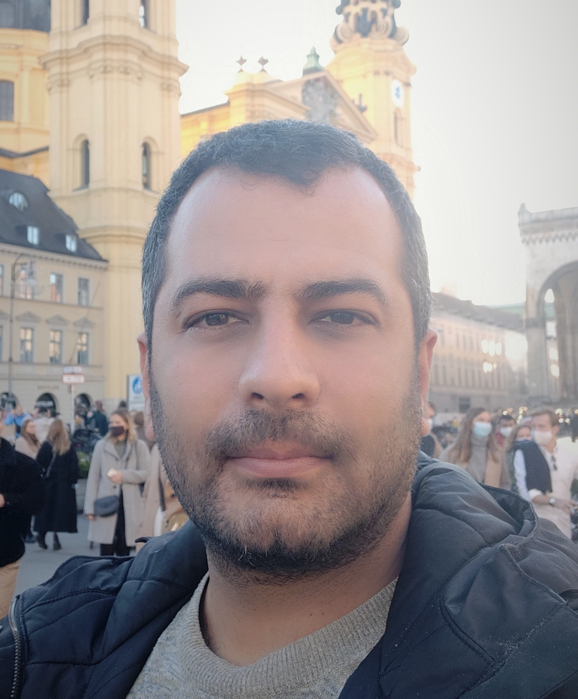

Shahab Heshmati-alamdari
|  | Shahab Heshmati-alamdari |
{kind=link}
Research Interest
My research interests include
Constrained planning & control of unmanned vehicles
Robust control of autonomous robots in uncertain & dynamic environments
Cooperative control for autonomous robotic systems
Manipulation & cooperative manipulation control of floating-base-manipulator-systems
Human-robot interaction control
Data-driven control
More about my research, also Google Scholar, Youtube, Orcid and Linkedin page.
Brief bio
I am an Assistant Professor in Robotics with the Automation and Control section of the Department of Electronic Systems of Aalborg University.
From June 2020 to May 2021 I worked as a postdoctoral researcher at the Chair of Information-oriented Control, TUM Department of Electrical and Computer Engineering, Technical University of Munich, Germany, collaborating with Prof. Sandra Hirche.
From January 2019 to June 2020, I held a postdoctoral position at the Decision and Control Systems, School of Electrical Engineering, KTH Royal Institute of Technology in Stockholm, Sweden where I was collaborating with Prof. Dimos Dimarogonas.
I received the MEng degree in Mechanical Engineering and the MSc degree in Automatic Control Systems & Robotics both from National Technical University of Athens (NTUA) in 2010 and 2012 respectively. In 2018, I received the PhD degree in Mechanical Engineering from the NTUA, Greece under the supervision of Prof. Kostas J. Kyriakopoulos. My PhD Thesis involved constrained (e.g., operational safety, sensing and communication limitations, energy resources etc.) motion & interaction control for autonomous single and multiple underwater robotic manipulator-endowed systems.
Highlights
There are several available student semester projects, Master & Bachelor Thesis projects in the areas of Robotics. Email me for more information.